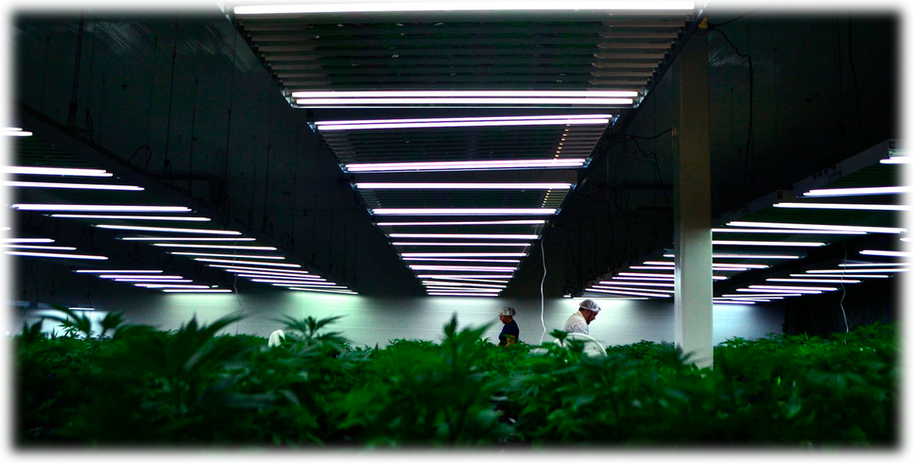

На страницах данного ресурса Вы узнаете все про выращивание марихуаны, об удобрениях и методах безопасного увеличения объемов конопли для максимального сбора урожая. Но перед тем как узнать о том как выращивать марихуану, важно знать и помнить о том что выращивание и распространение марихуаны запрещено Законодательством Украины и преследуется законом.Подробнее о мерах наказания за выращивание конопли, ее хранение и распространение — 4-20.com.ua/zakon-za-vyirashhivanie-marixuanyi.html
Как выращивать марихуану для курения и коноплю для бытовых целей
Выращивание марихуаны распределяется на два больших вида — в помещении (индор) и на улице (аутдор). Каждый из этих видов имеет свои особенности и подвиды выращивания. Так например конопля выращивания которой проходит в закрытом пространстве может выращиваться методом разделения каждого растения по горшкам и называться гидропоникой. Или так же для выращивания в закрытом помещении применяется метод "аэропоника" когда растение и вовсе не садиться в грун, а растет прямо-таки в воздухе. Аутдорные методы выращивания марихуаны — это высадка пророщенных семян в открытый грунт и выращивание в теплицах. Каждый из этих методов имеет своих приверженцев, свои плюсы и минусы. Но какой бы Вы не выбрали для себя метод, основой для достижения положительного результата являются жизненно необходимые отличные условия для того чтобы вырасти коноплю с хороших урожаем.
Как вырастить марихуану эффективно
- Выберите качественные семена. Для первого раза лучшего всего покупать автоцветущие феминизированные. Новичку будет проще всего справить с их гровингом поскольку такие растения являются весьма неприхотливыми. Так же при выборе определите какой именно сорт семечек Вам необходим — индика или сатива.
- Деликатно проращивайте. Важным на старте является момент когда проращиваются семена марихуаны выращивание поскольку дальнейшего черенка во многом зависит именно с этого первого этапа. Многим гроверам с первого раза не всегда удается прорастить семя. Чаще всего оно погибает либо от того что жидкости слишком много и семя раскисает/сгнивает или от пересушивания так как в один момент была жидкость и семя пустило маленький росточек, а после из-за отсутствия влаги высохло. О правильном проращивании читайте тут — kak-prorastit-semena-marixuanyi.html
- Правильная высадка растения — от черенка к ростку. На этапе когда из семени вырос расточек можно уже задумываться о дальнейшем пересаживании ростка в грунт или любую иную почву на которой будет в дальнейшем расти конопля. Тут уже дело зависит от того как вырасти семена конопли Вы собираетесь. Но какой бы из методов Вы не выбрали, стоит быть очень аккуратным и предвидеть любую ситуацию. Поскольку ростки конопли очень хрупкие, сломать их может любое неосторожное движение или даже порыв сильного ветра.
Важно выращивать марихуану в хороших условиях и с достатком света
- Достойный уход и удобрение. Эта тема весьма обширна, многозначительна и в каждом индивидуальном случае может отличаться. Поэтому перед применением какого либо удобрения, методики полива, освещение и так далее, детально изучите подходит ли методика именно для вашего метода выращивания каннабиса и сорта конопли. Применение непроверенной информации может привести к полной гибели растения.
- Своевременный сбор урожая. Когда уже все классно, растение достигло желаемых размеров и на шишках начали обильно появляться трихомы, важно вовремя успеть собрать урожай. Перерост растения в почве или наоборот ранний сбор урожая, могут оказаться пагубными на количестве главного компонента марихуаны ТГК. Этот момент так же важно изучать и знать. Все вариации зависят опять же таки от сорта и метода выращивания конопли.
Тщательное изучение нюансов выращивания позволит Вам добиться положительных результатов. Поэтому перед тем чтоб решиться растить коноплю прочтите материал как выращивать марихуану. Изучите все существующие виды и выберите доступный и самый подходящий именно для Вас!
Администрация 4-20 не призывает к выращиванию марихуаны!
Мы являемся международным информационным порталом!
Помните — выращивание, распространение и хранение конопли противоречит Законодательству Украины и многих других стран! Нарушение Закона наказывается лишением свободы!
Условия для роста
Тщательное изучение всех нюансов позволит Вам добиться максимального результата. Помните, что свет — это главный двигатель роста конопли.
Администрация 4-20 не призывает к выращиванию марихуаны!
Мы являемся международным информационным порталом. Помните — выращивание, распространение и хранение конопли противоречит законодательству Украины и многих других стран!